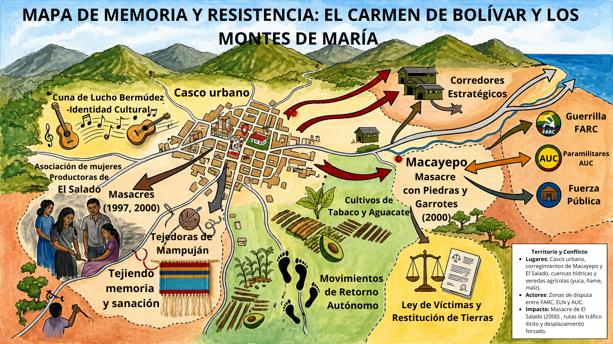
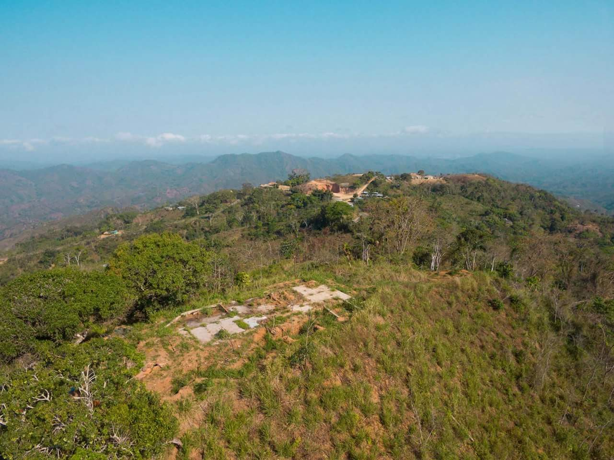
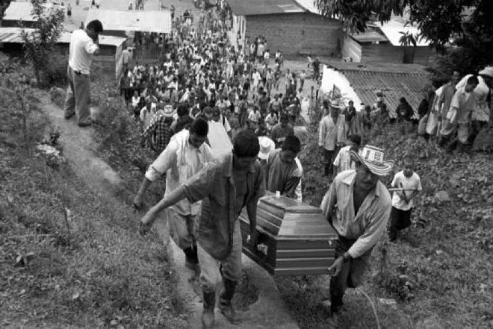
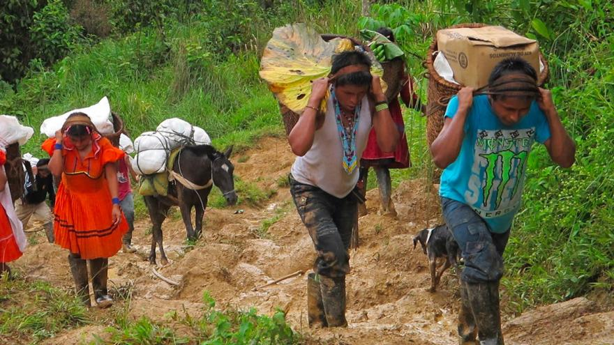
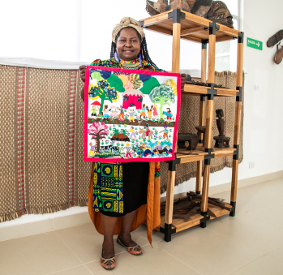
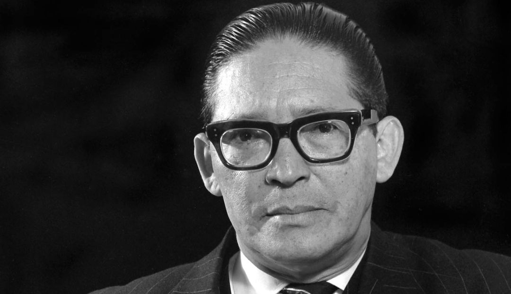
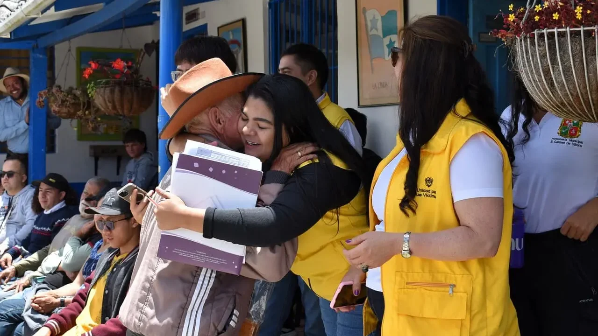

Montes de María · Departamento de Bolívar · Colombia
Una historia de desplazamiento forzado, identidad cultural
y la lucha de una comunidad por recuperar su tierra y su dignidad.
Décadas de 1990 – 2000s · Una herida abierta
01 — Contexto histórico
El Carmen de Bolívar está enclavado en la región de Montes de María, en la Costa Caribe colombiana. Fundado en el siglo XVIII, su identidad se forjó en la mezcla de raíces indígenas, africanas y españolas. Es cuna de la música de banda —de aquí es Lucho Bermúdez— y de una tradición artesanal vibrante en totumo y fique.
Pero desde mediados de los años 90, el municipio se convirtió en epicentro de una de las crisis humanitarias más graves de Colombia. La región se transformó en campo de batalla entre las FARC (Frente 35 y 37), el Bloque Montes de María de las AUC —creado en 1997— y la Fuerza Pública. El resultado fue devastador: desplazamientos masivos, masacres y el desmoronamiento del tejido social de comunidades campesinas que llevaban generaciones labrando estas tierras.
Su economía, basada históricamente en el cultivo de yuca, ñame, maíz, tabaco y aguacate, y en la ganadería bovina, quedó paralizada. Miles de familias perdieron en horas lo que habían construido en décadas.
"El Carmen de Bolívar no es solo una historia de dolor; es un testimonio vivo de la capacidad humana de resistir, reconstruir y florecer."
— Del proyecto de memoria colectiva, 2025Hoy, en el posconflicto, comunidades retornadas reconstruyen sus vidas sobre la misma tierra que les fue arrebatada, mientras luchan por la restitución jurídica y la reconstrucción de su identidad.
Montes de María, departamento de Bolívar, Costa Caribe colombiana. Municipio más golpeado de la región.
Yuca, ñame, maíz, tabaco y aguacate. Ganadería bovina históricamente concentrada en pocas manos.
1997–2002: entrada de paramilitares, oleada de masacres y desplazamientos masivos. En 2002 se declara Estado de Conmoción Interior.
Cuna de Lucho Bermúdez. Banda papayera, festivales, artesanías. La cultura fue escudo contra el terror.
JEP, Comisión de la Verdad, Ley 1448 de Víctimas y Restitución de Tierras. Apoyo de ONU, UE y USAID.
02 — Territorio y conflicto
El mapa ilustra los lugares clave del conflicto: el casco urbano, los corregimientos de Macayepo y El Salado, los corredores estratégicos disputados, los actores armados y los símbolos de resistencia comunitaria.

03 — Cronología
El Frente 37 se asienta en la región para ejercer control territorial. Realizan extorsiones, robo de ganado y control de rutas del narcotráfico, generando tensiones con la población campesina.
Las FARC consolidan su presencia en los Montes de María. La región queda bajo la influencia armada y la población civil comienza a sufrir las consecuencias del fuego cruzado.
Las AUC crean su bloque regional. Comienzan las incursiones paramilitares con asesinatos selectivos, masacres y terror sistemático para vaciar el territorio de población civil. Primera masacre en El Salado.
Las AUC perpetran masacres en las veredas de San Isidro y Caracolí como parte de su estrategia de terror para consolidar el control territorial y despojar de base social a la guerrilla.
Paramilitares del alias "Cadena" asesinan a 15 campesinos en Macayepo con piedras y garrotes, desplazando a más de 200 familias. En El Salado, la segunda masacre deja 60 muertos y miles de desplazados.
El gobierno de Álvaro Uribe declara Estado de Conmoción Interior y designa los Montes de María como Zona de Rehabilitación y Consolidación. Se intensifican las operaciones militares.
Se da la desmovilización parcial de los bloques paramilitares. Sin embargo, la región no recupera la paz total: estructuras herederas continúan operando bajo otras denominaciones.
Se aprueba la Ley 1448, que abre la puerta a la restitución de tierras despojadas. Más de 1.200 familias de la región inician procesos jurídicos para recuperar sus predios.
Las Autodefensas Gaitanistas de Colombia retoman presencia en la región, buscando controlar los mismos corredores estratégicos que otrora dominaron los bloques paramilitares desmovilizados.
Las comunidades retornadas reconstruyen sus vidas sobre la misma tierra que les fue arrebatada. La JEP, la Comisión de la Verdad y organizaciones de mujeres como las Tejedoras de Mampuján lideran la recuperación del tejido social.
04 — Actores del conflicto
El desplazamiento forzado fue producto de una compleja interacción entre actores armados ilegales y fuerzas estatales que convirtieron a la población civil en el principal blanco y víctima.
Desde 1987 se asentaron en la región ejerciendo control territorial. Extorsionaban, robaban ganado y controlaban rutas del narcotráfico, generando tensiones y alimentando la espiral de violencia.
Con apoyo de las Convivir y sectores ganaderos, ejecutaron asesinatos selectivos, masacres y terror sistemático. Responsables directos de las masacres de El Salado (1997, 2000) y Macayepo (2000). El municipio sufrió 18 masacres en total.
Las operaciones militares intensificaron el riesgo para la población civil. Las comunidades quedaron atrapadas entre la guerrilla, la respuesta paramilitar y las ofensivas del Estado.
Miembros de las Convivir, empresarios y terratenientes facilitaron la expansión de las AUC. El despojo y la concentración de tierras fueron mecanismos deliberados de control territorial con complicidad civil.
05 — Formas de resistencia
Frente al terror, las comunidades de El Carmen de Bolívar y sus corregimientos desarrollaron mecanismos de resistencia civil no violenta para sobrevivir y reconstruir su tejido social.
A diferencia de los retornos organizados por el Estado, muchas comunidades regresaron a sus tierras por cuenta propia, desafiando las órdenes de los grupos armados. Campesinos volvieron a sembrar tabaco y aguacate aun con el conflicto latente, enviando un mensaje: la tierra les pertenecía a ellos, no a los fusiles.
La Asociación de Mujeres Productoras de El Salado y las Tejedoras de Mampuján utilizaron el arte y el diálogo para sanar colectivamente. La resistencia se manifestó en mantener vivas las tradiciones culinarias y las redes de apoyo mutuo para huérfanos y viudas.
El Carmen de Bolívar es tierra de música: cuna de Lucho Bermúdez. Mantener las fiestas patronales y los festivales de banda fue una forma de decirle al terror que no había borrado su identidad. La cultura fue resistencia política activa.
Con la Ley de Víctimas y Restitución de Tierras (Ley 1448), la comunidad libró una batalla legal contra el despojo administrativo. La lucha contra las compras masivas de tierra a precios irrisorios durante el conflicto ha sido una de las formas de resistencia más técnicas y valientes.
06 — Voz de las víctimas
El Salado, corregimiento de El Carmen de Bolívar, fue arrasado en dos masacres (1997 y 2000) perpetradas por el Bloque Montes de María de las AUC. Más de 60 personas fueron asesinadas y miles de familias debieron huir.
Este testimonio recoge la voz de sobrevivientes y víctimas que narran lo ocurrido desde adentro, preservando la memoria de uno de los episodios más violentos del conflicto armado colombiano.
"El desplazamiento no fue voluntario. Quedarse significaba morir."
— David Perdomo, reflexión del grupo investigadorLas Tejedoras de Mampuján convirtieron el tapiz en instrumento de memoria y sanación. A través del arte, narran el desplazamiento que vivieron en el año 2000, cuando paramilitares les ordenaron abandonar su pueblo en pocas horas.
Su trabajo ha sido reconocido internacionalmente como ejemplo de resistencia civil no violenta y reparación simbólica dentro del marco de la Justicia Transicional colombiana.
07 — Archivo fotográfico
Fotografías de contexto del conflicto en los Montes de María y el Carmen de Bolívar, procedentes de archivos periodísticos y del Centro Nacional de Memoria Histórica.






08 — Posconflicto
Programas para fortalecer la capacidad institucional de los gobiernos locales y promover la inversión pública en infraestructura, educación y salud en las zonas más afectadas.
Han abierto espacios para reconocer los crímenes cometidos, reparar a las víctimas y garantizar la no repetición. El terror no puede quedar en la impunidad.
Han aportado recursos cruciales para la reconstrucción territorial y el acompañamiento psicosocial a las comunidades, complementando los esfuerzos del Estado colombiano.
09 — Recursos
Fuentes documentales, informes y recursos para profundizar en la historia del desplazamiento forzado en el Carmen de Bolívar y los Montes de María.
Informe oficial del CNMH sobre las masacres de 1997 y 2000 en el corregimiento de El Salado. Testimonios, análisis y archivo fotográfico.
Plataforma oficial para consultar cifras de víctimas del conflicto armado, incluyendo desplazados, por municipio y hecho victimizante.
Portal oficial de la JEP: casos abiertos, macrocasos, comparecientes y avances en la investigación de crímenes del conflicto armado.
El informe final de la Comisión de la Verdad de Colombia, que recoge lo ocurrido en regiones como Montes de María durante el conflicto armado.
Informes del sistema de la ONU sobre la situación de derechos humanos en Colombia, con énfasis en desplazamiento forzado y restitución de tierras.
Estadísticas, informes y proyectos de ACNUR para atender a las personas desplazadas internamente en Colombia, uno de los casos más complejos del mundo.
Reportes humanitarios, alertas tempranas y datos sobre el impacto del conflicto en comunidades afectadas de los Montes de María.
Periodismo de investigación sobre el conflicto armado en los Montes de María. Testimonios, crónicas y análisis sobre lo ocurrido en la región.
10 — Reflexión final
Este conflicto armado fue una tragedia que destruyó vidas y familias, y que demostró que el terror puede ser usado como herramienta de control territorial. El desplazamiento no fue voluntario: quedarse significaba morir. El abandono del Estado fue un factor decisivo, pues paramilitares y guerrillas lograron controlar la región porque el Estado nunca llegó a tiempo.
Recordar es un acto de justicia. Conocer lo que pasó es el primer paso para garantizar que no se repita.